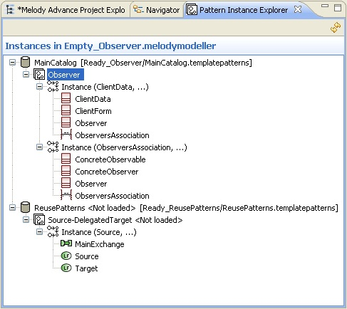

Using the Pattern Instance Explorer
The Pattern Instance Explorer shows all usages of patterns and instances in the current model. These usages are presented as a tree which supports multiple selection and provides contextual menus.

Catalog representations
Pattern representations
Instance representations
Model element representations